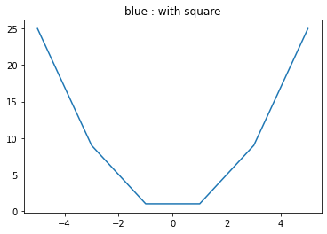
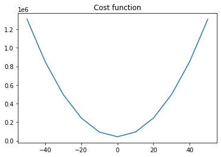
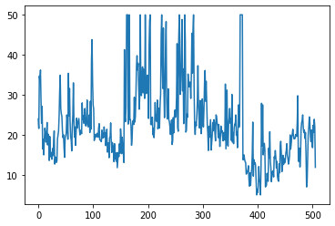
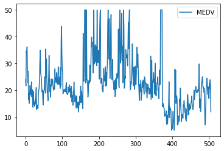
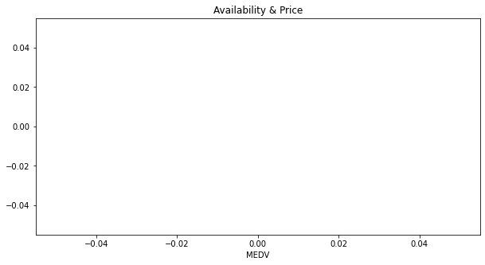

[99]:
import numpy as np
import pandas as pd
from sklearn.tree import DecisionTreeRegressor
from matplotlib import pyplot as plt
from scipy.optimize import minimize
# Tuto
# Tirage aléatoire de 5 entiers compris entre 0 et 10
np.random.randint(low=0, high=10, size=5)
# Tuto
# sequence
np.arange(0, 5, 0.5, dtype=float)
rho = np.arange(0,1.1,0.1)
rho
# Tuto
# convert name to function
# h = 'DecisionTreeRegressor(random_state=0)'
# reg_tree = vars()[h]
# Tuto
# Fonction argmin qui trouve un minimum (fonction convexe)
# Exemple:
# NB: il faut ajouter le .x à la fin pour avoir l'argmin
def carre(x):
return x**2
x0=-1
minimize(carre, x0, method='nelder-mead', options={'xatol': 1e-8, 'disp': True}).x
# Tuto: np.linspace pour tracer des graphes
a = np.linspace(start = -5, stop = 5, num = 6, endpoint = True)
print("Graphical Representation : \n", np.square(a))
plt.title("blue : with square")
plt.plot(a, np.square(a))
plt.show()
#This uses the same mechansims.
%matplotlib inline
df = pd.read_csv(
filepath_or_buffer="http://lib.stat.cmu.edu/datasets/boston",
delim_whitespace=True,
skiprows=21,
header=None,
)
columns = [
'CRIM',
'ZN',
'INDUS',
'CHAS',
'NOX',
'RM',
'AGE',
'DIS',
'RAD',
'TAX',
'PTRATIO',
'B',
'LSTAT',
'MEDV',
]
#Flatten all the values into a single long list and remove the nulls
values_w_nulls = df.values.flatten()
all_values = values_w_nulls[~np.isnan(values_w_nulls)]
#Reshape the values to have 14 columns and make a new df out of them
df = pd.DataFrame(
data = all_values.reshape(-1, len(columns)),
columns = columns,
)
K=1
y = 'MEDV'
weight = np.ones(K).reshape(K,1)
model = dict()
predict = dict()
x_samp = [None]*K
y_samp = [None]*K
for k in range(K):
rand_index = np.random.randint(low=0, high=df.shape[0], size=round(df.shape[0]*0.8))
rand_cols = np.random.randint(low=0, high=df.drop(y, axis=1).shape[1], size=round(df.drop(y, axis=1).shape[1]*0.8))
x_samp[k] = df.drop(y,axis=1).loc[rand_index, :]
x_samp[k] = x_samp[k].iloc[:, rand_cols]
y_samp[k] = df.loc[rand_index, y]
regression_tree = DecisionTreeRegressor(max_depth=2)
model[k] = regression_tree.fit(x_samp[k], y_samp[k])
predict[k] = model[k].predict(x_samp[k])
print(predict[k][:12])
def qloss(p, v):
'''Function that returns the quadratic loss'''
return sum((p-v)**2)
def qloss_best_cst(y):
'''Function that returns the constant that Minimize the quadratic loss'''
n = len(y)
s = sum(y)
return np.ones(len(y))*s/n
def mrisk(rho, g= qloss_best_cst(df['MEDV']), f=np.ones(len(df['MEDV'])), y = df['MEDV']):
return qloss(g + rho*f, y)
qloss(np.ones(3),0.1*np.ones(3))
rho = np.linspace(start = -50, stop = 50, num = 11, endpoint = True)
mr = np.ones(len(rho))
for i,r in enumerate(rho):
mr[i] = mrisk(r)
print("Graphical Representation : \n", mr)
plt.title("Cost function")
plt.plot(rho, mr)
plt.show()
x0=-1
minimize(mrisk, x0, method='nelder-mead', args=(qloss_best_cst(df['MEDV']), np.ones(len(df['MEDV'])), df['MEDV']), options={'xatol': 1e-8, 'disp': True}).x
# mloss = np.ones(len(np.arange(0,1.1,0.1)))
# for i, rho in enumerate(np.arange(0,1.1,0.1)):
# mloss[i] = mrisk(rho=rho, g= qloss_best_cst(df['MEDV']), f=np.ones(len(df['MEDV'])), y = df['MEDV'])
# plt.plot(np.arange(0,1.1,0.1), mloss)
# plt.show()
# https://docs.scipy.org/doc/scipy/tutorial/optimize.html
print('Le coût est de {}'.format(mrisk(rho=0.1, g= qloss_best_cst(df['MEDV']), f=np.ones(len(df['MEDV'])), y = df['MEDV'])))
x0 = 0 # initialisation de la suite
print('Le minimum de la fonction de coût est atteint en {}'.format(minimize(mrisk, x0, method='nelder-mead', args=(qloss_best_cst(df['MEDV']), np.ones(len(df['MEDV'])), df['MEDV']), options={'xatol': 1e-8, 'disp': True}).x))
mrisk(rho=-3e+26, g= qloss_best_cst(df['MEDV']), f=np.ones(len(df['MEDV'])), y = df['MEDV'])
Optimization terminated successfully.
Current function value: 0.000000
Iterations: 31
Function evaluations: 62
Graphical Representation :
[25. 9. 1. 1. 9. 25.]

[21.39037037 21.39037037 21.39037037 21.39037037 30.20681818 30.20681818
47.58333333 13.8 21.39037037 21.39037037 30.20681818 30.20681818]
Graphical Representation :
[1307716.29541502 852316.29541502 498116.29541502 245116.29541502
93316.29541502 42716.29541502 93316.29541502 245116.29541502
498116.29541502 852316.29541502 1307716.29541502]

Optimization terminated successfully.
Current function value: 42716.295415
Iterations: 32
Function evaluations: 66
Le coût est de 42721.355415019774
Optimization terminated successfully.
Current function value: 42716.295415
Iterations: 17
Function evaluations: 35
Le minimum de la fonction de coût est atteint en [-1.44958496e-07]
[99]:
4.553999999999955e+55
[108]:
class GradientBoosting():
def __init__(self, max_depth=2, K=4):
self.max_depth = max_depth
self.model = dict()
self.preds = dict()
self.resid = dict()
self.K = K
def qloss(self, y):
'''Function that returns the quadratic loss'''
# return np.dot(np.array(y).T, self.pred)
return (1/len(y))*0.5*sum((y-self.pred)**2)
def qloss_d(self, y):
'''Function that returns the derivative quadratic loss'''
return 2*(y - self.pred)
def qloss_best_cst(self, y):
'''Function that returns the constant that Minimize the quadratic loss'''
n = len(y)
s = sum(y)
return np.ones(len(y))*s/n
def bagging(self, x=None, y=None):
'''Fonction that returns une liste obtenue par bagging de K arbres'''
# Initialisation des poids
weight = np.ones(self.K).reshape(self.K,1)
#model = dict()
#preds = dict()
x_samp = [None]*self.K
y_samp = [None]*self.K
for k in range(self.K):
rand_index = np.random.randint(low=0, high=x.shape[0], size=round(x.shape[0]*0.8))
rand_cols = np.random.randint(low=0, high=len(y), size=round(len(y)*0.8))
x_samp[k] = x.loc[rand_index, :]
# On conserve les features initiales (pas de tirage aléatoire des colonnes)
#x_samp[k] = x_samp[k].iloc[:, rand_cols]
y_samp[k] = y[rand_index]
reg_tree = DecisionTreeRegressor(random_state=0)
self.model[k] = reg_tree.fit(x_samp[k], y_samp[k])
#self.preds[k] = self.model[k].predict(x_samp[k])
return self.model
def predict_ens(self, x):
'''
This function returns the prediction for a given X feature dataset.
Note: The prediction is stored as a global class variable "self.pred"
to call it with quadratic loss functions
'''
self.pred = np.ones([x.shape[0]])
for k in range(self.K):
self.pred += self.model[k].predict(x)
self.pred /= self.K
return self.pred
def mrisk(self, rho, g,f):
v = g + rho*f
return self.qloss(v)
def GradientBoosting(self, x, y):
'''Function that return the GradientBoosting model'''
r = dict()
f = dict()
pred = dict()
reg_tree = dict()
# Initialisation du modèle par la constante
self.model[0] = self.qloss_best_cst(y)
# Calcul du 1er résidu
self.resid = y - self.model[0]
for k in range(1,self.K+1):
# Apprendre le modèle fk sur l'ensemble (x, r):
reg_tree = DecisionTreeRegressor(max_depth = self.max_depth, random_state=0)
self.model[k] = reg_tree.fit(x, self.resid)
pred = self.model[k].predict(x)
# Calculer l'argmin rho de la fonction quadratique:
x0=-1
rho = minimize(self.mrisk, x0, method='nelder-mead', args=(self.qloss_best_cst(y), pred), options={'xatol': 1e-8, 'disp': True}).x
pred = self.qloss_best_cst(y) + rho * np.sum([self.model[k].predict(x) for i in range(1, k+1)], axis=0)
# Mise à jour des nouveaux résidus
self.resid = y - pred
return self.model
grb = GradientBoosting()
grb.bagging(x=df.drop('MEDV', axis=1), y=df['MEDV'])
grb.predict_ens(df.drop('MEDV', axis=1))
grb.qloss(df['MEDV'])
grb.qloss_d(df['MEDV'])
grb.qloss_best_cst(df['MEDV'])
grb.mrisk(rho=0.2, g= np.ones(len(df['MEDV']))*np.mean(df['MEDV']), f=np.ones(len(df['MEDV'])))
x0=-1
minimize(grb.mrisk, x0, method='nelder-mead', args=(np.ones(len(df['MEDV']))*np.mean(df['MEDV']), np.ones(len(df['MEDV']))), options={'xatol': 1e-8, 'disp': True}).x
grb.GradientBoosting(x=df.drop('MEDV', axis=1), y=df['MEDV'])
Optimization terminated successfully.
Current function value: 4.340388
Iterations: 39
Function evaluations: 80
Optimization terminated successfully.
Current function value: 115.773745
Iterations: 32
Function evaluations: 66
Optimization terminated successfully.
Current function value: 115.986477
Iterations: 32
Function evaluations: 66
Optimization terminated successfully.
Current function value: 115.853075
Iterations: 33
Function evaluations: 68
Optimization terminated successfully.
Current function value: 116.892968
Iterations: 32
Function evaluations: 67
[108]:
{0: array([22.53280632, 22.53280632, 22.53280632, 22.53280632, 22.53280632,
22.53280632, 22.53280632, 22.53280632, 22.53280632, 22.53280632,
22.53280632, 22.53280632, 22.53280632, 22.53280632, 22.53280632,
22.53280632, 22.53280632, 22.53280632, 22.53280632, 22.53280632,
22.53280632, 22.53280632, 22.53280632, 22.53280632, 22.53280632,
22.53280632, 22.53280632, 22.53280632, 22.53280632, 22.53280632,
22.53280632, 22.53280632, 22.53280632, 22.53280632, 22.53280632,
22.53280632, 22.53280632, 22.53280632, 22.53280632, 22.53280632,
22.53280632, 22.53280632, 22.53280632, 22.53280632, 22.53280632,
22.53280632, 22.53280632, 22.53280632, 22.53280632, 22.53280632,
22.53280632, 22.53280632, 22.53280632, 22.53280632, 22.53280632,
22.53280632, 22.53280632, 22.53280632, 22.53280632, 22.53280632,
22.53280632, 22.53280632, 22.53280632, 22.53280632, 22.53280632,
22.53280632, 22.53280632, 22.53280632, 22.53280632, 22.53280632,
22.53280632, 22.53280632, 22.53280632, 22.53280632, 22.53280632,
22.53280632, 22.53280632, 22.53280632, 22.53280632, 22.53280632,
22.53280632, 22.53280632, 22.53280632, 22.53280632, 22.53280632,
22.53280632, 22.53280632, 22.53280632, 22.53280632, 22.53280632,
22.53280632, 22.53280632, 22.53280632, 22.53280632, 22.53280632,
22.53280632, 22.53280632, 22.53280632, 22.53280632, 22.53280632,
22.53280632, 22.53280632, 22.53280632, 22.53280632, 22.53280632,
22.53280632, 22.53280632, 22.53280632, 22.53280632, 22.53280632,
22.53280632, 22.53280632, 22.53280632, 22.53280632, 22.53280632,
22.53280632, 22.53280632, 22.53280632, 22.53280632, 22.53280632,
22.53280632, 22.53280632, 22.53280632, 22.53280632, 22.53280632,
22.53280632, 22.53280632, 22.53280632, 22.53280632, 22.53280632,
22.53280632, 22.53280632, 22.53280632, 22.53280632, 22.53280632,
22.53280632, 22.53280632, 22.53280632, 22.53280632, 22.53280632,
22.53280632, 22.53280632, 22.53280632, 22.53280632, 22.53280632,
22.53280632, 22.53280632, 22.53280632, 22.53280632, 22.53280632,
22.53280632, 22.53280632, 22.53280632, 22.53280632, 22.53280632,
22.53280632, 22.53280632, 22.53280632, 22.53280632, 22.53280632,
22.53280632, 22.53280632, 22.53280632, 22.53280632, 22.53280632,
22.53280632, 22.53280632, 22.53280632, 22.53280632, 22.53280632,
22.53280632, 22.53280632, 22.53280632, 22.53280632, 22.53280632,
22.53280632, 22.53280632, 22.53280632, 22.53280632, 22.53280632,
22.53280632, 22.53280632, 22.53280632, 22.53280632, 22.53280632,
22.53280632, 22.53280632, 22.53280632, 22.53280632, 22.53280632,
22.53280632, 22.53280632, 22.53280632, 22.53280632, 22.53280632,
22.53280632, 22.53280632, 22.53280632, 22.53280632, 22.53280632,
22.53280632, 22.53280632, 22.53280632, 22.53280632, 22.53280632,
22.53280632, 22.53280632, 22.53280632, 22.53280632, 22.53280632,
22.53280632, 22.53280632, 22.53280632, 22.53280632, 22.53280632,
22.53280632, 22.53280632, 22.53280632, 22.53280632, 22.53280632,
22.53280632, 22.53280632, 22.53280632, 22.53280632, 22.53280632,
22.53280632, 22.53280632, 22.53280632, 22.53280632, 22.53280632,
22.53280632, 22.53280632, 22.53280632, 22.53280632, 22.53280632,
22.53280632, 22.53280632, 22.53280632, 22.53280632, 22.53280632,
22.53280632, 22.53280632, 22.53280632, 22.53280632, 22.53280632,
22.53280632, 22.53280632, 22.53280632, 22.53280632, 22.53280632,
22.53280632, 22.53280632, 22.53280632, 22.53280632, 22.53280632,
22.53280632, 22.53280632, 22.53280632, 22.53280632, 22.53280632,
22.53280632, 22.53280632, 22.53280632, 22.53280632, 22.53280632,
22.53280632, 22.53280632, 22.53280632, 22.53280632, 22.53280632,
22.53280632, 22.53280632, 22.53280632, 22.53280632, 22.53280632,
22.53280632, 22.53280632, 22.53280632, 22.53280632, 22.53280632,
22.53280632, 22.53280632, 22.53280632, 22.53280632, 22.53280632,
22.53280632, 22.53280632, 22.53280632, 22.53280632, 22.53280632,
22.53280632, 22.53280632, 22.53280632, 22.53280632, 22.53280632,
22.53280632, 22.53280632, 22.53280632, 22.53280632, 22.53280632,
22.53280632, 22.53280632, 22.53280632, 22.53280632, 22.53280632,
22.53280632, 22.53280632, 22.53280632, 22.53280632, 22.53280632,
22.53280632, 22.53280632, 22.53280632, 22.53280632, 22.53280632,
22.53280632, 22.53280632, 22.53280632, 22.53280632, 22.53280632,
22.53280632, 22.53280632, 22.53280632, 22.53280632, 22.53280632,
22.53280632, 22.53280632, 22.53280632, 22.53280632, 22.53280632,
22.53280632, 22.53280632, 22.53280632, 22.53280632, 22.53280632,
22.53280632, 22.53280632, 22.53280632, 22.53280632, 22.53280632,
22.53280632, 22.53280632, 22.53280632, 22.53280632, 22.53280632,
22.53280632, 22.53280632, 22.53280632, 22.53280632, 22.53280632,
22.53280632, 22.53280632, 22.53280632, 22.53280632, 22.53280632,
22.53280632, 22.53280632, 22.53280632, 22.53280632, 22.53280632,
22.53280632, 22.53280632, 22.53280632, 22.53280632, 22.53280632,
22.53280632, 22.53280632, 22.53280632, 22.53280632, 22.53280632,
22.53280632, 22.53280632, 22.53280632, 22.53280632, 22.53280632,
22.53280632, 22.53280632, 22.53280632, 22.53280632, 22.53280632,
22.53280632, 22.53280632, 22.53280632, 22.53280632, 22.53280632,
22.53280632, 22.53280632, 22.53280632, 22.53280632, 22.53280632,
22.53280632, 22.53280632, 22.53280632, 22.53280632, 22.53280632,
22.53280632, 22.53280632, 22.53280632, 22.53280632, 22.53280632,
22.53280632, 22.53280632, 22.53280632, 22.53280632, 22.53280632,
22.53280632, 22.53280632, 22.53280632, 22.53280632, 22.53280632,
22.53280632, 22.53280632, 22.53280632, 22.53280632, 22.53280632,
22.53280632, 22.53280632, 22.53280632, 22.53280632, 22.53280632,
22.53280632, 22.53280632, 22.53280632, 22.53280632, 22.53280632,
22.53280632, 22.53280632, 22.53280632, 22.53280632, 22.53280632,
22.53280632, 22.53280632, 22.53280632, 22.53280632, 22.53280632,
22.53280632, 22.53280632, 22.53280632, 22.53280632, 22.53280632,
22.53280632, 22.53280632, 22.53280632, 22.53280632, 22.53280632,
22.53280632, 22.53280632, 22.53280632, 22.53280632, 22.53280632,
22.53280632, 22.53280632, 22.53280632, 22.53280632, 22.53280632,
22.53280632, 22.53280632, 22.53280632, 22.53280632, 22.53280632,
22.53280632, 22.53280632, 22.53280632, 22.53280632, 22.53280632,
22.53280632, 22.53280632, 22.53280632, 22.53280632, 22.53280632,
22.53280632, 22.53280632, 22.53280632, 22.53280632, 22.53280632,
22.53280632, 22.53280632, 22.53280632, 22.53280632, 22.53280632,
22.53280632, 22.53280632, 22.53280632, 22.53280632, 22.53280632,
22.53280632, 22.53280632, 22.53280632, 22.53280632, 22.53280632,
22.53280632, 22.53280632, 22.53280632, 22.53280632, 22.53280632,
22.53280632, 22.53280632, 22.53280632, 22.53280632, 22.53280632,
22.53280632, 22.53280632, 22.53280632, 22.53280632, 22.53280632,
22.53280632]),
1: DecisionTreeRegressor(max_depth=2, random_state=0),
2: DecisionTreeRegressor(max_depth=2, random_state=0),
3: DecisionTreeRegressor(max_depth=2, random_state=0),
4: DecisionTreeRegressor(max_depth=2, random_state=0)}
[106]:
plt.plot(df['MEDV'])
plt.show()

[109]:
df.plot(y='MEDV', use_index=True)
[109]:
<AxesSubplot:>

[103]:
import matplotlib.pyplot as plt
import seaborn as sns
plt.figure(figsize=(10,5))
plt.title('Availability & Price')
sns.scatterplot(df['MEDV'])
plt.show()
/Users/davidtbo/work/lib/python3.9/site-packages/seaborn/_decorators.py:36: FutureWarning: Pass the following variable as a keyword arg: x. From version 0.12, the only valid positional argument will be `data`, and passing other arguments without an explicit keyword will result in an error or misinterpretation.
warnings.warn(

[ ]: